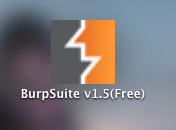
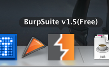
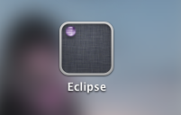
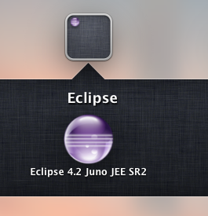

Javaアプリで、"java -jar xxxx.jar"だけで動くようなアプリの場合、Mac OS XのLaunchPadやSpotlightなどのランチャーアプリから検索して実行するのに支障があります。それに限らず、シェルスクリプトを介して実行したかったり、諸事情で"xxxx.app"の中身の構成を若干調整したい場合の参考資料などを勉強がてらまとめました。
環境 : Mac OS X 10.8.4
基本 : "xxxx.app" = "Bundle"
まず"xxxx.app"のディレクトリは、"Mac Developer Library"では "Bundle" と呼ばれており、"Bundle Programming Guide"にその構成方法が紹介されています。
"Bundle"は "iOS Application" と "OS X Application" の両方で使われているテクノロジーです。今回はシェルスクリプトを".app"として扱いたいので、"Anatomy of an OS X Application Bundle" が参考になります。
簡単にまとめると以下の様なディレクトリ構成になってるようです。
xxxx.app/
Contents/
Info.plist : アプリ用のPropertyList
MacOS/
実行ファイルやフレームワークライブラリなど
Resources/
アイコンや画像、メッセージなどリソースファイル
Info.plistではXML形式で、"MacOS"ディレクトリに入っている実行ファイルを指定したり、アプリの名前やアイコン、"Preference"設定などを記載するようです。
- PropertyListの一般的な説明
- "Bundle"などアプリケーション設定に関わるPropertyListの設定の説明
シェルスクリプトを".app"(="Bundle")化するには
本記事のお題である、シェルスクリプトの".app"化はそんなに難しくありません。決められたディレクトリ構成と、最小限度のInfo.plistで簡単に実現できます。
最小構成
"xxxx.app"ディレクトリの構成:
xxxx.app/
Contents/
Info.plist
MacOS/
xxxx.sh (chmod +x して実行権限をつけておく)
Resources/
(空)
Info.plist:
<?xml version="1.0" encoding="UTF-8"?>
<!DOCTYPE plist PUBLIC "-//Apple Computer//DTD PLIST 1.0//EN" "http://www.apple.com/DTDs/PropertyList-1.0.dtd">
<plist version="1.0">
<dict>
<key>CFBundleExecutable</key>
<string>xxxx.sh</string>
<key>CFBundlePackageType</key>
<string>APPL</string>
<key>CFBundleSignature</key>
<string>????</string>
</dict>
</plist>
参考：
- Karuku Mac: シェルスクリプトをMacのアプリケーション化するシェルスクリプト
- シェルスクリプトなどの CUI アプリケーションを Mac OS X 方式の .app にする方法
- Macはじめました。: シェルスクリプトを「.app」形式にする方法 - 「SayKanji.app」を作ってみる。
- シェルスクリプトを Mac OS X 方式の .app にする方法 [簡単 2 ステップ] - うむらうす
上記で構成した "xxxx.app" を "/Applications/" に移せば、Spotlight検索からも見つかるし、LaunchPadからも起動できるようになります。
"/Applications/" をFinderで開いて、"xxxx.app" のアイコンをDockにDrag&Dropすれば、Dockからも起動できるようになります。
アイコン画像の追加
アイコンを追加するには、".icns"ファイルをどうにかして用意して、"Resources"ディレクトリの下に配置し、Info.plistにアイコンファイルの設定を追記します。
追加：
xxxx.app/Contents/MacOS/Resources/xxxx.icns
Info.plist追加：
...
<plist version="1.0">
<dict>
...
<key>CFBundleIconFile</key>
<string>app.icns</string>
</dict>
</plist>
なおFinderで確認するとアイコン画像が更新されない場合は（多分確実に更新されてないと思います）、一旦マシンを再起動すると良いでしょう。
今回試した環境では、再起動するだけで追加したアイコン画像がちゃんと表示されました。再起動でもダメな場合は、"~/Library/Cache/"以下を削除してから再起動してみてください。
（Finderのアイコンも含めた）Mac OSXでのキャッシュのクリア方法：
- How to Delete Cache Files in Mac OS X | eHow
- OSX Lion - Clear your caches! - Techbeast.net
- Icon Cache | NSLog();
- OS X Icon Cache Cleaner-Upper - Other - Snipplr Social Snippet Repository
- http://snipplr.com/view/259/
- Safariのiconキャッシュのクリアの参考例 : "find $HOME/Library/Safari/Icons -type f -atime +30 -name "*.cache" -delete"
- http://snipplr.com/view/259/
実践例
本記事を作るきっかけは、仕事や趣味でよく使うPortSwiggerのBurpSuiteを"xxxx.app"として起動したかったり、Eclipseの".app"ファイルをもっと柔軟に取り扱いたい、という動機でした。
OSXで使えるランチャーを調べてみたりして、Alfred2で2,000円近くはたいて有料版のPowerPackまで購入してみたのですが、workflowとか余計なのを作らされた挙句Terminalが立ち上がってしまったりして、なかなか「単にシェルスクリプトをTerminalを表示せず起動したいだけのランチャー」というのが見つからず（誰か知ってます？）、止む無く"java -jar xxxx.jar"を実行するシェルスクリプトを".app"化してLaunchPadなどで起動できるようにした次第です。Automator使っても可能といえば可能なんですが・・・アイコンのカスタマイズが効かなかったり、そもそもシェルスクリプトを".app"化したいだけであそこまで大仰な仕組みを使うのも何だか収まりが悪かったのです。
PortSwiggerのBurpSuite 1.5 (Free版)を".app"化する
準備：Javaを入れておきます。javaとjarコマンドを使えるようにしておきます。
まずBurpSutieのjarファイルをDLします。今回は burpsuite_free_v1.5.jar をDLしました。
- Download Burp Suite
次に、作業用のディレクトリで".app"ディレクトリを作成し、"Bundle"の基本構成を作っておきます。
$ mkdir (...)/burp-1.5.app $ cd (...)/burp-1.5.app $ mkdir -p (...)/burp-1.5.app/Contents $ mkdir -p (...)/burp-1.5.app/Contents/MacOS $ mkdir -p (...)/burp-1.5.app/Contents/Resources $ mkdir -p (...)/burp-1.5.app/Contents/Resources
ここでちょっと寄り道して、アイコンを作成しておきます。"jar xf burpsuite_free_v1.5.jar" でjarの中身を展開し、"burp/media/icon64.png" などを".icns"に変換します。
具体的な変換方法や使用するツールについては省略します。
今回は "app.icns" という名前にして、"Resources"ディレクトリの下に置きました。
続いて実行するシェルスクリプトを用意します。"Contents/MacOS"ディレクトリの下に次のシェルスクリプトを作成し、"chmod +x"で実行権限をつけておきます。
burp-1.5.sh:
#!/bin/sh # AppleのJavaを使わず、好みのJDK/JREを使うようカスタマイズしたい場合に以下2行を追加・調整。 export JAVA_HOME=/Library/Java/JavaVirtualMachines/jdk1.7.0_21.jdk/Contents/Home export PATH=$JAVA_HOME/bin:$PATH JAR_DIR=`dirname $0` java -Xdock:name="BurpSuite 1.5" -Xdock:icon=$JAR_DIR/../Resources/app.icns -jar $JAR_DIR/burpsuite_free_v1.5.jar
上記スクリプトでは、実行するjarファイルがshファイルと同じフォルダに置いておくことを前提としてます。jarファイルをMacOSディレクトリに置くことになるわけですが、お作法としてこれでOKかちょっと分かりません・・・。jarファイルを実行ファイルと考えればここでも良いような気がします。また、一応ちゃんと動いています。
というわけで、burpsuite_free_v1.5.jarをMacOSディレクトリの下に移しておきます。
また、上記スクリプトでは"-Xdoc:name"と"-Xdock:icon"というJVMオプションを指定して、実行時にDock上でも名前が分かるようにしています。
最後にInfo.plistを作成します。今回は以下の様な内容にしました。
"burp-1.5.app/Contents/Info.plist":
<?xml version="1.0" encoding="UTF-8"?>
<!DOCTYPE plist PUBLIC "-//Apple Computer//DTD PLIST 1.0//EN" "http://www.apple.com/DTDs/PropertyList-1.0.dtd">
<plist version="1.0">
<dict>
<key>CFBundleName</key>
<string>Burp-1.5</string>
<key>CFBundleDisplayName</key>
<string>Burp-1.5</string>
<key>CFBundleExecutable</key>
<string>burp-1.5.sh</string>
<key>CFBundlePackageType</key>
<string>APPL</string>
<key>CFBundleSignature</key>
<string>????</string>
<key>CFBundleIconFile</key>
<string>app.icns</string>
</dict>
</plist>
"CFBundleName"と"CFBundleDisplayName"については何となーくあったほうが良いかな？レベルでつけてますので、削除しても良いかもです。
ポイントは "CFBundleExecutable" で実行権限をつけたシェルスクリプトを指定しているのと、"CFBundleIconFile" でアイコンファイル名を追加している点になります。
最終的なディレクトリ構成としては以下のようになりました。
burp-1.5.app/
Contents/
Info.plist
MacOS/
burp-1.5.sh
burpsuite_free_v1.5.jar
Resources/
app.icns
この段階でFinderで表示してみると、アイコンが反映されてないため、マシンを再起動します。アイコンが無事更新されたら、実際にクリックしてみてBurpSuiteが起動するか確認します。起動しない場合は、普通にTerminalから直接burp-1.5.shを起動してデバッグしてみて下さい。
動作確認できたら、あとは"/Applications/"ディレクトリに移動してあげれば、少し待つとLaunchPadにも追加されますし、Spotlight検索からも検索できるようになりました。
追記：結局、"burp-1.5" ではちょっと見た目が短すぎるだろう、ということで、"BurpSuite v1.5(Free).app" というディレクトリ名に変更しました
。
/Applications/BurpSuite v1.5(Free).app/
Contents/
Info.plist
...
Info.plist:
<plist version="1.0">
<dict>
<key>CFBundleName</key>
<string>BurpSuite v1.5(Free)</string>
<key>CFBundleDisplayName</key>
<string>BurpSuite v1.5(Free)</string>
...
それに伴い、"dirname $0" などで空白が混ざるようになりましたので、shファイルも以下のように修正しました。また、今までshの実行プロセスが残ってしまっていたので、javaコマンドに "&" を後ろにつけて切り離して実行するようにして、shの方はすぐに終わるように修正してます。
burp-1.5.sh:
... JAR_DIR=`dirname "$0"` java -Xdock:name="BurpSuite v1.5(Free)" -Xdock:icon="$JAR_DIR/../Resources/app.icns" -jar "$JAR_DIR/burpsuite_free_v1.5.jar" &
結局、こんな感じになりました。LaunchPad上は・・・

FinderからDockにDrag & Drop してみるといい感じに収まりました。

Eclipseの".app"と複数バージョンについて
Eclipseはメジャーなアップデートは分けてインストールしておきたいタイプですので、単にEclipseのzipを解凍して"/Applications/" に放り込むだけは避けたいと考えています。
まずはOSX用のEclipseをDLします・・・が・・・すでに4.3 Keplerまで上がっちょる・・・。
自分、数ヶ月前にDLした eclipse-jee-juno-SR2-macosx-cocoa-x86_64.tar.gz を使おうと思ってたのです・・・。
とりあえず eclipse-jee-juno-SR2-macosx-cocoa-x86_64.tar.gz を解凍すると、こんなディレクトリ構成ができました。
Eclipse.app/ artifacts.xml configuration/ eclipse@ -> Eclipse.app/Contents/MacOS/eclipse epl-v10.html features/ notice.html p2/ plugins/ readme/
実は、以前Eclipse 3.7と4.0を同居させた時、何も考えずに上記のような構成のフォルダを、"/Applications/Eclipse/" の下に"3.7"と"4.0"に分けてごっそり放り込んだんですよ。そしたら・・・
/Applications/Eclipse/
3.7/
...
Eclipse.app/
...
4.0/
...
Eclipse.app/
...
となってしまい、LaunchPad上、"Eclipse.app"が２つ見えるようになり、どっちがどっちか分からなくなってしまったんですね。
今回はそうした自体を避けたいな・・・というところでした。
eclipse-jee-juno-SR2-macosx-cocoa-x86_64.tar.gz を解凍したディレクトリの中にある "Eclipse.app"の中を覗いてみるとシンプルな構成になっていました。
"Eclipse.app":
Contents/
Info.plist
MacOS/
eclipse
eclipse.ini
Resources/
Eclipse.icns
Info.plist:
...
<plist version="1.0">
<dict>
<key>CFBundleExecutable</key>
<string>eclipse</string>
<key>CFBundleGetInfoString</key>
<string>Eclipse 3.8 for Mac OS X, Copyright IBM Corp. and others 2002, 2011. All rights reserved.</string>
<key>CFBundleIconFile</key>
<string>Eclipse.icns</string>
<key>CFBundleIdentifier</key>
<string>org.eclipse.eclipse</string>
<key>CFBundleInfoDictionaryVersion</key>
<string>6.0</string>
<key>CFBundleName</key>
<string>Eclipse</string>
<key>CFBundlePackageType</key>
<string>APPL</string>
<key>CFBundleShortVersionString</key>
<string>3.8</string>
<key>CFBundleSignature</key>
<string>????</string>
<key>CFBundleVersion</key>
<string>3.8</string>
...
<key>Eclipse</key>
<array>
<!-- to use a specific Java version (instead of the platform's default) uncomment one of the following options:
<string>-vm</string><string>/System/Library/Frameworks/JavaVM.framework/Versions/1.4.2/Commands/java</string>
<string>-vm</string><string>/System/Library/Frameworks/JavaVM.framework/Versions/1.5.0/Commands/java</string>
-->
<string>-keyring</string><string>~/.eclipse_keyring</string>
<string>-showlocation</string>
<!-- WARNING:
If you try to add a single VM argument (-vmargs) here,
*all* vmargs specified in eclipse.ini will be ignored.
We recommend to add all arguments in eclipse.ini
-->
</array>
</dict>
</plist>
なんかバージョン番号っぽいのに"3.8"とか入ってるんですが・・・とりあえず気にしないことにします。
また、JVMオプションをInfo.plistで指定できるっぽいですが、eclipse.iniで設定するほうがオススメっぽいことも書かれてます。
Contents/MacOS/eclipse.ini:
-startup ../../../plugins/org.eclipse.equinox.launcher_1.3.0.v20120522-1813.jar --launcher.library ../../../plugins/org.eclipse.equinox.launcher.cocoa.macosx.x86_64_1.1.200.v20120913-144807 -product org.eclipse.epp.package.jee.product --launcher.defaultAction openFile -showsplash org.eclipse.platform --launcher.XXMaxPermSize 256m --launcher.defaultAction openFile -vmargs -Dosgi.requiredJavaVersion=1.5 -Dhelp.lucene.tokenizer=standard -XstartOnFirstThread -Dorg.eclipse.swt.internal.carbon.smallFonts -XX:MaxPermSize=256m -Xms40m -Xmx512m -Xdock:icon=../Resources/Eclipse.icns -XstartOnFirstThread -Dorg.eclipse.swt.internal.carbon.smallFonts
"Eclipse.app" をリネームして Info.plistの CFBundleNameもリネームして衝突しないようにすれば、"/Application/Eclipse/バージョン番号"別に配置しても問題ない感じがして来ました。
ということで、以下の様な構成にしてみます。
/Applications/
Eclipse/
e4.2-juno-jee-SR2/
configurations/
features/
p2/
plugins/
Eclipse 4.2 Juno JEE SR2.app/ <- "Eclipse.app"をリネーム
...
Info.plistのCFBundleNameも "Eclipse 4.2 Juno JEE SR2" に変更しておきました。
→LaunchPad上で、以下の様なグループアイコンが表示されました。

→クリックしてみると、以下のように "Eclipse 4.2 Juno JEE SR2.app" が表示されました！なお、ラベルは当初"Eclipse(その他"みたいになってたので、"Eclipse"だけに変更してます。

これで、将来新しいバージョンのEclipseをインストールするときも衝突せずに導入できるようになりました（多分）。